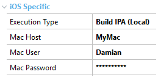
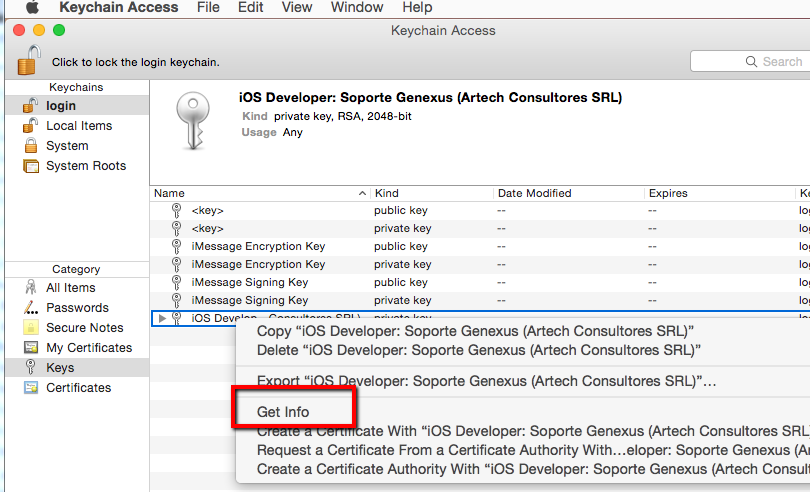
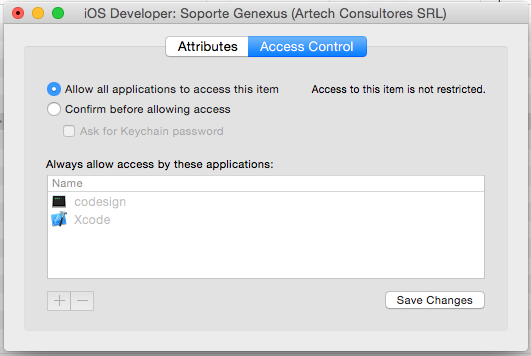

|
The first step is to register yourself as an iOS developer.
Then you need to perform the following steps:
- Access to the iOS Developer Program | Certificates, Identifiers & Profiles section
From the iOS Dev Center, you can access at the right (under iOS Developer Program) and then the Certificates, Identifiers & Profiles option.
- Create a Development Certificate
This certificate will be used to sign the apps you will be testing. This certificate needs to be installed on the Mac where you will later compile the app.
- Assign Apple Devices
You can test your apps on up to 100 devices (500 if you have an Enterprise account). You need to register the UDID of these devices.
- Create App IDs
You have to create an App ID for each app you will be testing. An App ID is a combination of a unique ten-character string called the Bundle Seed ID and a traditional CF Bundle ID (or Bundle Identifier). This Bundle Identifier must be the same that the value of the Apple Bundle Identifier property, located under Main object properties > Apple group, on the properties of Main object. The default value is com.artech.<Object>:
- Create a Provisioning Profile
This Provisioning Profile ties the information of the Development Certificate, the App ID, and the devices, and it will also be needed in the Mac where the app will be compiled, and in the device where the app will run.
All these steps are documented in the Apple iOS Provisioning Portal page, check the How-to's sections, that have detailed instructions and also videos.
After that, you are able to compile your app in the Mac. To do that, configure the following Smart Devices generator properties:
In the iOS Specific node:

Then, when you press F5 in GeneXus, it will generate the Xcode project for the app, transfer it to the Mac, compile it remotely, and it will generate a *.ipa package file, that it will transfer back to your development machine, and the path will be displayed in the Output window.
- The first time you run the application you will receive an error because the compilation requires an authorization that requires User interaction ('User interaction is not allowed'). You must copy the last command that appears in the output with the error and run it under a Terminal in your Mac using the same User that you configure to compile in GeneXus. The execution of that command will popup a Confirm window and you must select Always allow to don't have this error again.
- Another way to avoid this error is to open Keychain, two-fingers gesture (or right-click) over the Private Key you are using to sign, 'Get Info' option:

and then go to 'Access Control', and select 'Allow all applications to access this item':

- You can install that .ipa on a device, using iTunes or iPhone Configuration Utility
 Prototyping features and Deployment of applications for Smart Devices Prototyping features and Deployment of applications for Smart Devices
|